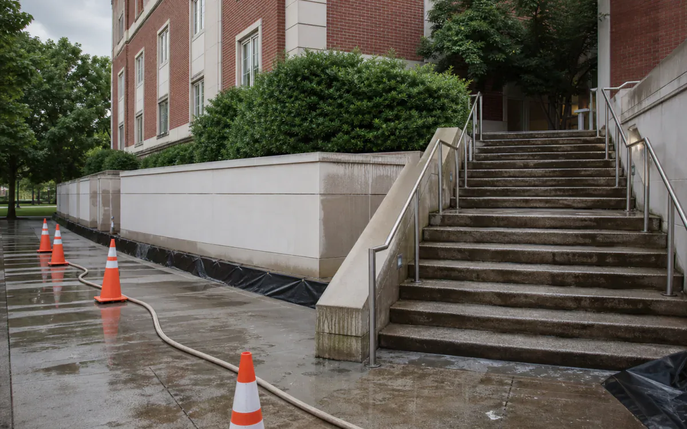
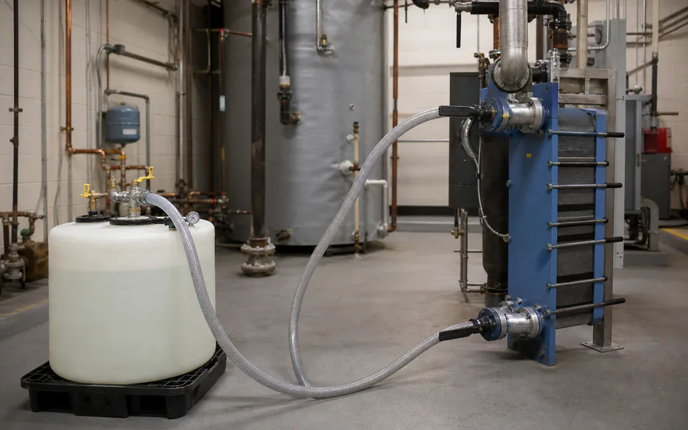
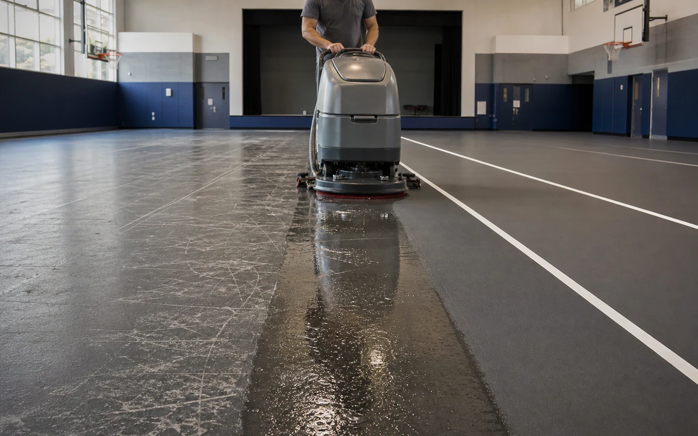
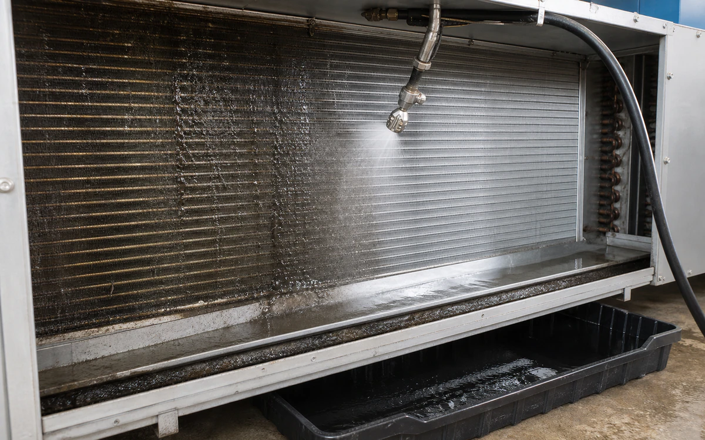

Industries › Education Facilities
One campus chemistry plan, matched by zone.
VertKleen HCR and WaterSafe60 address boilers, towers, and scale; CR and MultiWash lift kitchen, floor, and facility soil; Purgo supports odor control.
- CleanBoilers, cooling towers, heat exchangers, kitchen equipment, restroom fixtures, gym floors, drains, and hardscape
- RemoveMineral scale, rust, grease, soap film, tracked soil, algae staining, and drain residue
- MethodZone-specific descaling, degreasing, or surface cleaning during approved work windows
- Operating limitsUse district chemical review, custodial training, locked storage, occupied-space scheduling, ventilation and traffic isolation, food-service protection, and separate approved disinfection.
- See job fit, process, and results
Cleaning chemistry for Education Facilities.
Fewer product families, lower odor, and task-specific methods simplify occupied-campus work.
See VertKleen resultsWhat matters before you switch chemistry.
Prove removal on the actual soil and surface before replacing the incumbent.
Compare cost per completed job across labor, rinse water, wastewater handling, downtime, and return to service.






Recommended
VertKleen products for Education Facilities.
Match the formula to the soil, surface, and cleaning process.
Applications and job fit
Clean campus mechanical, kitchen, restroom, and exterior assets within occupied-building and school-calendar controls.
- Task
- Clean campus mechanical, kitchen, restroom, and exterior assets within occupied-building and school-calendar controls.
- Asset / substrate
- Boilers, cooling towers, heat exchangers, kitchen equipment, restroom fixtures, gym floors, drains, and hardscape
- Soil / deposit
- Mineral scale, rust, grease, soap film, tracked soil, algae staining, and drain residue
- Starting chemistry
- VertKleen CIP CR, VertKleen CIP HCR, WaterSafe60, VertKleen MultiWash
- Concentration
- Use the applicable current label/TDS range and approve the starting dilution through facilities, EHS, and a small-area trial.
- Process controls
- Document solution/surface temperature, dwell, agitation, rinse, ventilation, barricade time, and dry/reoccupancy release.
- Shutdown / containment
- Use district chemical review, custodial training, locked storage, occupied-space scheduling, ventilation and traffic isolation, food-service protection, and separate approved disinfection.
- Success check
- Visual and white-wipe acceptance, neutral rinse where applicable, no slip residue, and mechanical performance trend for water-side work.
Product files
Open application records or request the SDS/TDS for your team.
Scope the job